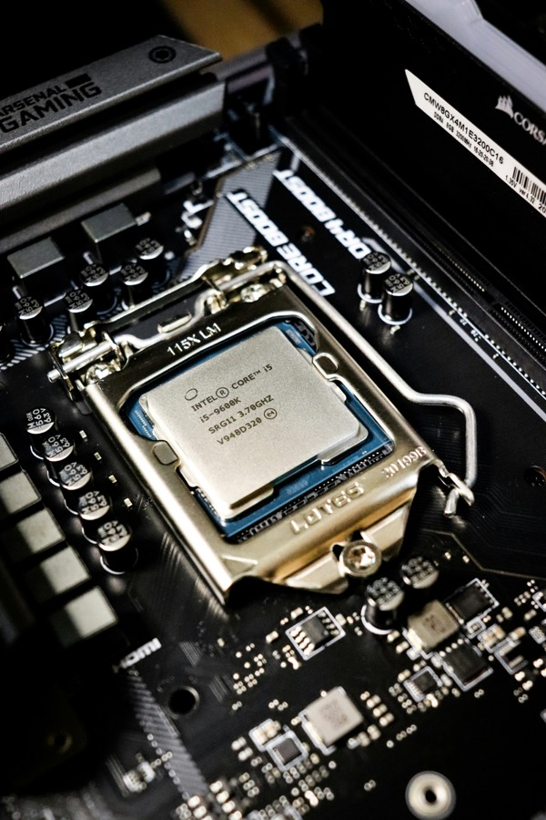
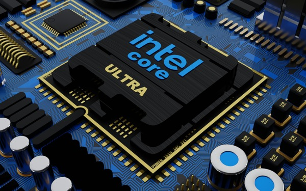
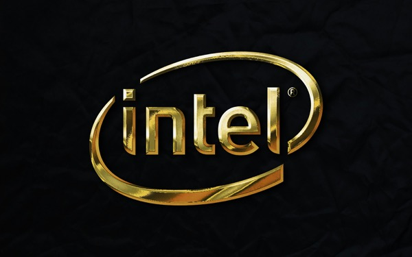
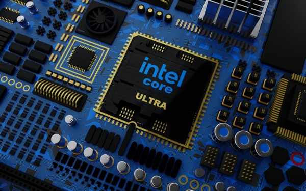
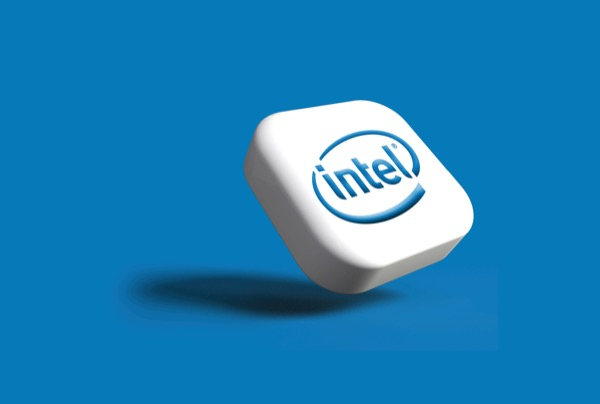

1968
Intel Founded
Intel begins its journey as a semiconductor company.
This milestone represents the beginning of Intel's role in modern computing and processor manufacturing.
intel
Explore Intel's journey through time, discovering how innovation has helped shape a more sustainable future for technology and our planet.
Scroll through the timeline and hover over each card to learn more.

1968
Intel begins its journey as a semiconductor company.
This milestone represents the beginning of Intel's role in modern computing and processor manufacturing.

1978
Intel introduces a processor that helps shape personal computing.
The 8086 processor became an important milestone in Intel's technology history.

1985
Intel introduces stronger performance and multitasking.
This processor shows how innovation continued to improve computing power over time.

2020
Intel expands its focus on responsibility and sustainability.
Intel's RISE strategy focuses on responsible, inclusive, and sustainable growth.

2030
Intel works toward major goals for energy, water, and waste.
These goals include renewable electricity, water conservation, and waste reduction.
Intel's RISE strategy connects technology innovation with responsibility, inclusion, and sustainability.
Intel works to reduce emissions and improve energy efficiency across its products and operations.
Intel supports water conservation, recycling, and waste reduction in its manufacturing process.
Enter your email to receive updates about Intel sustainability and innovation.